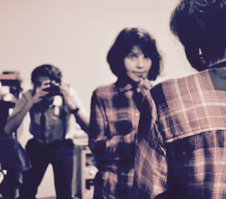
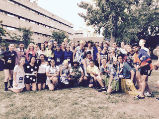
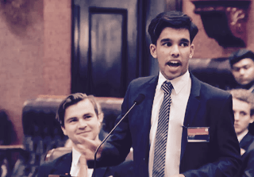
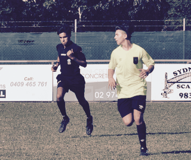

Family & Upbringing
My immediate family consists only of my parents and I. While I was born in Adelaide, I moved to Sydney in 2003, and grew up around Gladesville, in Sydney's lower North Shore. I grew up in and around this area until early 2019, excluding a short stint in Melbourne for 18 months between 2009 and 2011. Both my parents completed their postgraduate studies (both Masters & Doctorates) at UTS, while working as Academic Staff for the Faculty of Arts and Social Sciences. As a result, I spent a lot of time in and around the university, even attending UTS Childcare at Blackfriars (2003-5).

Science & Technology
As early as 2007, I was recognised for my exceptional interest and talent in technology, participating in co-curricular clubs to enhance my understanding. In more recent times, I have participated in multiple STEM+ programs, including UNSW CompClub (2014-6), Cochlear Autumn School of Engineering (2017), and the National Youth Science Forum (2018) - a 2 week residential experience at ANU. These programs have not only taught me valuable skills in scientific and engineering inquiry, but have allowed me to connect with likeminded individuals to share ideas about the future of STEM. Based off my experiences in these programs, I decided to apply successfully for the UTS BIT (Co-Op) program in 2018, starting my Information Technology course in March of 2019.
As early as 2007, I was recognised for my exceptional interest and talent in technology, participating in co-curricular clubs to enhance my understanding. In more recent times, I have participated in multiple STEM+ programs, including UNSW CompClub (2014-6), Cochlear Autumn School of Engineering (2017), and the National Youth Science Forum (2018) - a 2 week residential experience at ANU. These programs have not only taught me valuable skills in scientific and engineering inquiry, but have allowed me to connect with likeminded individuals to share ideas about the future of STEM. Based off my experiences in these programs, I decided to apply successfully for the UTS BIT (Co-Op) program in 2018, starting my Information Technology course in March of 2019.

Leadership History
In the local and school communities, I have been seen as a leader in many aspects, being responsible for Committees, co-ordinating projects, and representing the voices of the youth in large public forums. In high school, I was the Head of the Formal Committee in 2016 & 2018, as well as being the publicity officer for many committees (most notably Social Justice & Student Wellbeing). From 2015-2016, I was chosen to be the Youth Representative for the Lane Cove area in NSW Youth Parliament, later culminating in my 2017 election as Youth Environment Minister for NSW. The publicity and profile I gained from this led me to starting an advocacy campaign, named The Coaching College Project, where I voiced concerns surrounding the unregulated nature of the tutoring industry. In 2018, I was approached by two educators to become one of the major co-founders of an Educational NFP organisation.
In the local and school communities, I have been seen as a leader in many aspects, being responsible for Committees, co-ordinating projects, and representing the voices of the youth in large public forums. In high school, I was the Head of the Formal Committee in 2016 & 2018, as well as being the publicity officer for many committees (most notably Social Justice & Student Wellbeing). From 2015-2016, I was chosen to be the Youth Representative for the Lane Cove area in NSW Youth Parliament, later culminating in my 2017 election as Youth Environment Minister for NSW. The publicity and profile I gained from this led me to starting an advocacy campaign, named The Coaching College Project, where I voiced concerns surrounding the unregulated nature of the tutoring industry. In 2018, I was approached by two educators to become one of the major co-founders of an Educational NFP organisation.

Sport Management
I have a passion for many sports, and I always aim to maintain my physical fitness. Along with my leadership ability, I am able to combine many of these talents of mine in the area of sports management, whether it be officiating, coaching or servicing sports at varying levels. I have refereed football for FNSW, where I am required to manage some of the best Female & Youth players in NSW. I have also participated as a Ballkid at the APIA Sydney International Tennis Tournament, working with the best tennis players in the world and being a leader on centre court many times in my final appearance in 2017. Furthermore, I have community experience as a cricket coach, helping out at my Local Club's junior programs to help teach primary school children the fundamentals of cricket.
I have a passion for many sports, and I always aim to maintain my physical fitness. Along with my leadership ability, I am able to combine many of these talents of mine in the area of sports management, whether it be officiating, coaching or servicing sports at varying levels. I have refereed football for FNSW, where I am required to manage some of the best Female & Youth players in NSW. I have also participated as a Ballkid at the APIA Sydney International Tennis Tournament, working with the best tennis players in the world and being a leader on centre court many times in my final appearance in 2017. Furthermore, I have community experience as a cricket coach, helping out at my Local Club's junior programs to help teach primary school children the fundamentals of cricket.